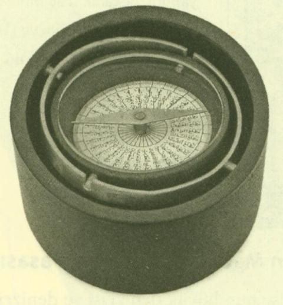

Hind Okyanusu’nun büyük denizcisi ve denizcilik bilgini İbn Mâcid (15. yüzyıl), kendisinin, denizcilik alanını ileriye taşıdığından ve erken dönem eserlerinde düzeltilmeye muhtaç şeyleri de bulunduğundan emindir, içinde bulunduğu andaki bilgi seviyesinin üstünlüğü karşısında, daha önceki eserlerinde yazdıklarının arasında artık geçersiz şeylerin bulunduğunu dile getirmek için, çok ilginç bir şekilde, Kur’ân vahyi bağlamında kullanılan terminolojiyi kullanmakta: mensûh (iptal edilmiş) nâsih (iptal eden). (Katalog I, s. 72)
Hacimli eseri el-Fevaid'in bir yerinde, denizcilik bilimindeki bazı buluşların kendi başarılı çalışmalarına ait olduğunu söylemektedir. Bunlardan biri pusulanın gelişimindeki başarısıdır. Bu geliştirilen tipin mıknatıs iğnesi doğrudan doğruya pusulanın üstüne yerleştirilmiştir, yani yön belirleme için gerekli olan 32 kısma bölünmüş karton diskin alt tarafına taşıyıcı olarak değil üst tarafına yerleştirilmiş olup kartona bağlı olmadan hareket etmektedir. (Katalog I, s. 72; III, s. 65; C 1.08))
